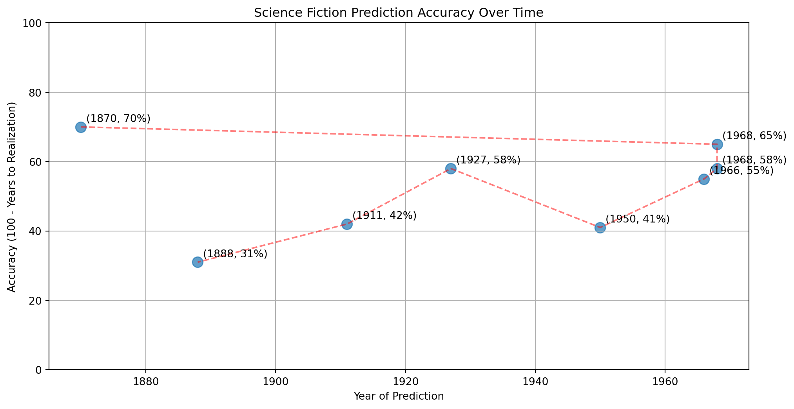
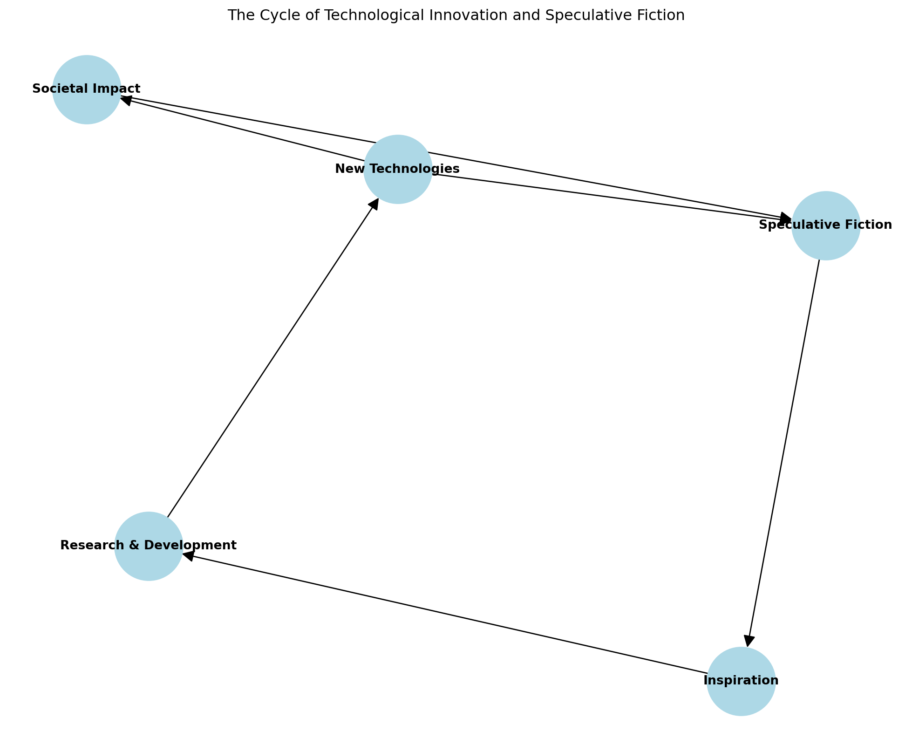

From Science Fiction to Science Fact: When Imagination Becomes Reality
science fiction
technology
innovation
Author
Arden Vairsilo
Published
2024-07-21
From Science Fiction to Science Fact: When Imagination Becomes Reality
Introduction
Science fiction has long been a crystal ball into our technological future. From Jules Verne’s submarines to Isaac Asimov’s robots, the genre has often predicted—and inspired—real-world innovations. But how accurate have these predictions been, and what can they tell us about the future of technology?
The Prophetic Power of Sci-Fi
Let’s start by looking at some notable predictions that have come true:
Sci-Fi Concept
Book/Movie
Year Predicted
Year Realized
Submarine
“20,000 Leagues Under the Sea”
1870
1900
Video Calls
“2001: A Space Odyssey”
1968
2003 (Skype)
Tablet Computers
“2001: A Space Odyssey”
1968
2010 (iPad)
Voice Assistants
“Star Trek”
1966
2011 (Siri)
Self-Driving Cars
“I, Robot”
1950
2009 (Google)
This table showcases some of the most famous examples of science fiction concepts that have become reality.
Visualizing Sci-Fi Accuracy
Let’s create a visualization to show how accurate science fiction has been in predicting future technologies:
Show the code
import matplotlib.pyplot as pltimport numpy as np# Data: [year predicted, years until realization]data = [ (1870, 30), # Submarine (1968, 35), # Video Calls (1968, 42), # Tablet Computers (1966, 45), # Voice Assistants (1950, 59), # Self-Driving Cars (1927, 42), # TV (1911, 58), # Credit Cards (1888, 69), # Space Stations]x, y =zip(*data)years = np.array(x)accuracy =100- np.array(y)plt.figure(figsize=(12, 6))plt.scatter(years, accuracy, s=100, alpha=0.7)plt.plot(years, accuracy, 'r--', alpha=0.5)for i, (year, acc) inenumerate(zip(years, accuracy)): plt.annotate(f"({year}, {acc}%)", (year, acc), xytext=(5, 5), textcoords='offset points')plt.title("Science Fiction Prediction Accuracy Over Time")plt.xlabel("Year of Prediction")plt.ylabel("Accuracy (100 - Years to Realization)")plt.ylim(0, 100)plt.grid(True)plt.show()

This scatter plot shows how the accuracy of science fiction predictions (measured as 100 minus the years until realization) has changed over time. A trend toward the upper right would indicate improving accuracy.
The Science Fiction Feedback Loop
One fascinating aspect of the relationship between science fiction and technology is the feedback loop it creates:
Authors imagine future technologies
Scientists and engineers are inspired by these ideas
Real-world research and development begins
New technologies emerge
These technologies inspire new science fiction stories
This cycle has led to a rich interplay between imagination and innovation, with each fueling the other.
Current Sci-Fi Technologies on the Horizon
What current science fiction technologies might we see in the near future? Let’s explore a few:
Brain-Computer Interfaces: Inspired by works like “Neuromancer” by William Gibson.
Holographic Displays: A staple of science fiction from “Star Wars”
From Science Fiction to Science Fact: When Imagination Becomes Reality
[Previous content remains the same]
Current Sci-Fi Technologies on the Horizon
What current science fiction technologies might we see in the near future? Let’s explore a few:
Brain-Computer Interfaces: Inspired by works like “Neuromancer” by William Gibson.
Holographic Displays: A staple of science fiction from “Star Wars” to “Minority Report.”
Artificial General Intelligence: The subject of countless sci-fi stories, from “I, Robot” to “Ex Machina.”
Space Elevators: Featured in Arthur C. Clarke’s “The Fountains of Paradise.”
Fusion Power: A clean energy source often depicted in futuristic sci-fi settings.
Let’s create a simple Python function to calculate the “Sci-Fi Realization Index” (SRI) for these technologies:
Show the code
import randomdef sci_fi_realization_index(tech_name, current_progress, complexity, funding):# Scores are on a scale of 0-10 progress_score = current_progress *0.4# Progress contributes 40% complexity_score = (10- complexity) *0.3# Lower complexity is better, contributes 30% funding_score = funding *0.3# Funding contributes 30% sri = progress_score + complexity_score + funding_score# Add a random factor to represent unforeseen developments sri += random.uniform(-0.5, 0.5)returnmax(0, min(10, sri)) # Ensure SRI is between 0 and 10# Example usagetechnologies = [ ("Brain-Computer Interfaces", 6, 9, 7), ("Holographic Displays", 7, 6, 8), ("Artificial General Intelligence", 5, 10, 9), ("Space Elevators", 3, 8, 5), ("Fusion Power", 4, 9, 7)]for tech in technologies: sri = sci_fi_realization_index(*tech)print(f"{tech[0]}: SRI = {sri:.2f}")
Brain-Computer Interfaces: SRI = 4.37
Holographic Displays: SRI = 6.02
Artificial General Intelligence: SRI = 4.73
Space Elevators: SRI = 3.49
Fusion Power: SRI = 3.92
This function calculates a “Sci-Fi Realization Index” based on current progress, technological complexity, and funding levels. A higher SRI suggests a technology is closer to becoming reality.
The Ethics of Emerging Technologies
As these technologies move from the pages of science fiction to our everyday lives, they raise important ethical questions. Let’s consider a few:
Privacy Concerns: Brain-computer interfaces could potentially allow unprecedented access to our thoughts and memories. How do we protect mental privacy?
Economic Disruption: As AI and robotics advance, how do we handle potential job displacement?
Control and Autonomy: With increasingly intelligent systems, where do we draw the line between human control and machine autonomy?
Access and Equality: How do we ensure that transformative technologies like fusion power are accessible to all, not just the wealthy?
Identity and Humanity: As we enhance human capabilities with technology, how do we define what it means to be human?
These questions don’t have easy answers, but they’re crucial to consider as we shape our technological future.
The Role of Speculative Fiction in Innovation
While we’ve focused on how accurately science fiction predicts future technologies, it’s worth noting that the relationship goes both ways. Speculative fiction doesn’t just predict the future; it helps create it by inspiring scientists, engineers, and entrepreneurs.
For example, the concept of the cellphone was partly inspired by the communicators in “Star Trek.” Similarly, the idea of virtual reality can be traced back to works like “Neuromancer” and “Snow Crash.”
C:\Users\Fernando\AppData\Local\Temp\ipykernel_30348\821521319.py:22: UserWarning:
This figure includes Axes that are not compatible with tight_layout, so results might be incorrect.

This diagram illustrates the cyclical relationship between speculative fiction, technological innovation, and societal impact.
Conclusion: The Power of Imagination
As we’ve seen, the line between science fiction and science fact is often blurrier than we might think. Today’s wild imaginings can become tomorrow’s commonplace technologies. This underscores the importance of creativity and imagination in driving scientific and technological progress.
But with great power comes great responsibility. As we continue to bring sci-fi concepts into reality, we must also grapple with their ethical implications and potential societal impacts. The stories we tell about the future can shape the future we create.
So, the next time you pick up a science fiction novel or watch a futuristic movie, remember: you might be getting a glimpse of the world to come. And who knows? Maybe you’ll be inspired to turn some of that fiction into fact.
References
Kirby, D. A. (2010). The Future is Now: Diegetic Prototypes and the Role of Popular Films in Generating Real-world Technological Development. Social Studies of Science, 40(1), 41-70.
Bassett, C., Steinmueller, E., & Voss, G. (2013). Better Made Up: The Mutual Influence of Science fiction and Innovation. Nesta Working Paper No. 13/07.
Bina, O., Mateus, S., Pereira, L., & Caffa, A. (2017). The Future Imagined: Exploring Fiction as a Means of Reflecting on Today’s Grand Societal Challenges and Tomorrow’s Options. Futures, 86, 166-184.
Tourney, C. P. (1992). The Moral Character of Mad Scientists: A Cultural Critique of Science. Science, Technology, & Human Values, 17(4), 411-437.
Milburn, C. (2010). Modifiable Futures: Science Fiction at the Bench. Isis, 101(3), 560-569.